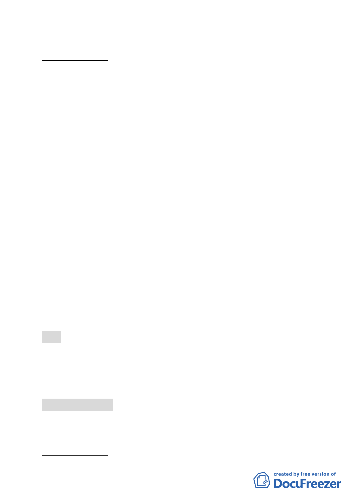

新單元
案情概要說明：
一、 本更新單元位於中山北路五段以東、幸福街以北、幸福街 5
巷以西、以及中山北路武段 698 巷以南所圍街廓內，面積約
1,038 平方公尺。
二、 本案土地使用分區為第一種商業區（特）（原屬住 3-2、住 3，
建蔽率 45％、容積率 400％）。更新單元內共計 13 棟 1-2 層
樓加強磚造建物，屋齡逾 30 年，基地東側鄰地建物係 92 年
建造，故未納入本次更新單元範圍。
三、 本更新單元土地、建物權屬皆為私有，未來規劃臨中山北路
留設 3.64 公尺以上騎樓或無遮簷人行道，中山北路五段 698
巷留設 3.64 公尺以上無遮簷人行道。
四、本件係市府以 99 年 5 月 7 日府都新字第 09930393400 號函送
到會。
五、申請單位：賴李鳳碧。
六、辦理單位：臺北市政府。
七、法令依據：都市計畫法第 66 條、都市更新條例第 5、6、8、
11 條及臺北市都市更新自治條例第 15 條。
八、本更新單元劃定業經市府審查符合「臺北市都市更新自治條例」
劃定基準及環境評估標準。
決議：
一、 本案更新單元劃定範圍照案通過。
二、 更新單元北側鄰中山北路五段 698 巷退縮建築部分，建議考
量東側基地北側保留地之性質予以配合留設。
討論事項 三十五
案名：劃定臺北市士林區芝山段一小段 113 地號等 11 筆土地為更
新單元
案情概要說明：
- 36 -